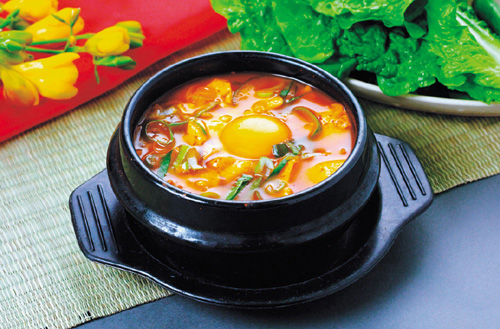

Korean Soft Tofu Stew

This is an easy and authentic version of Korean tofu stew. It's thick and great in the winter and can be made very mild or very spicy.
Ingredients
- 1 teaspoon vegetable oil
- 1 teaspoon Korean chile powder
- 2 tablespoons ground beef (Optional)
- 1 tablespoon Korean soy bean paste (doenjang)
- 1 cup water
- salt and pepper to taste
- 1 (12 ounce) package Korean soon tofu or soft tofu, drained and sliced
- 1 egg
- 1 teaspoon sesame seeds
- 1 green onion, chopped
Steps
- Heat the vegetable oil in a large saucepan over medium heat. Stir in the Korean chile powder and ground beef.
- Stir in the soy bean paste, coating the beef. Pour in the water and bring to a boil.
- Season with salt and pepper. Gently drop tofu into the soup and continue cooking until the tofu is heated through, 1 to 2 minutes.
- Remove from heat and quickly add the egg into the soup, stirring gently to break it up.
- Garnish with sesame seeds and green onion.
return to all recipies